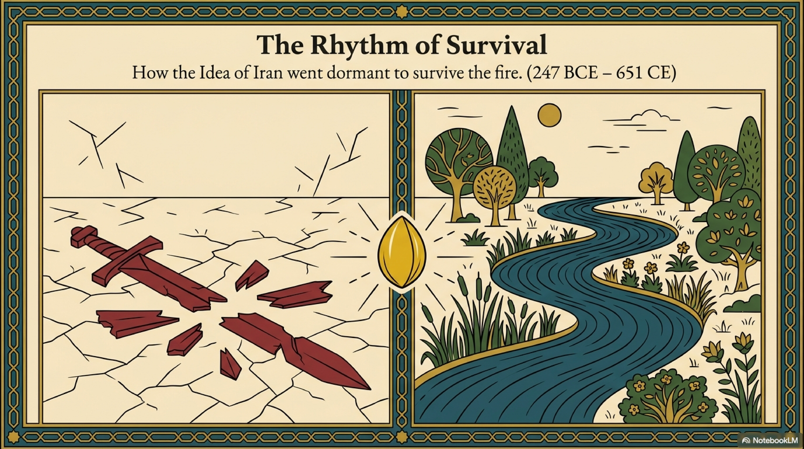
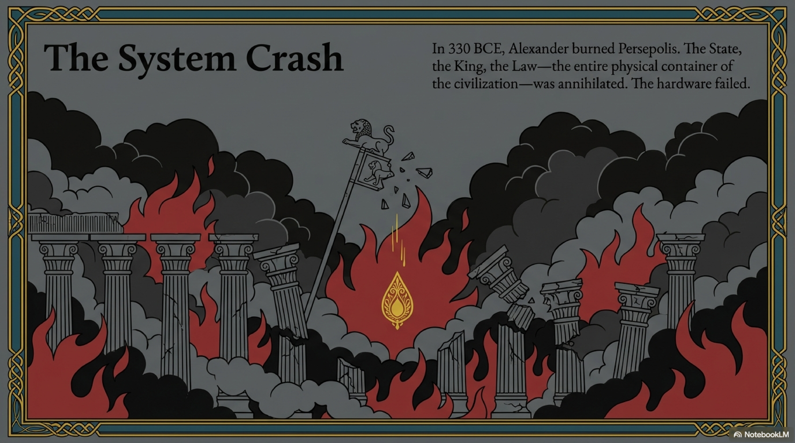
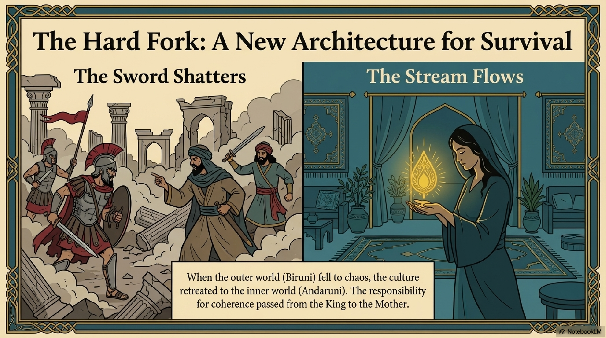
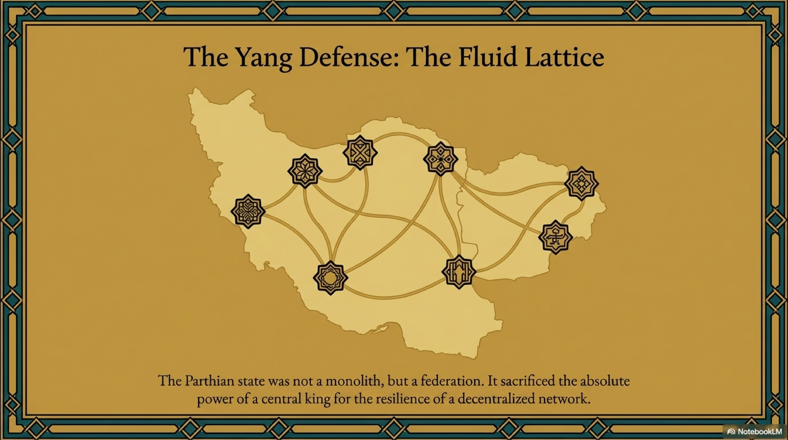
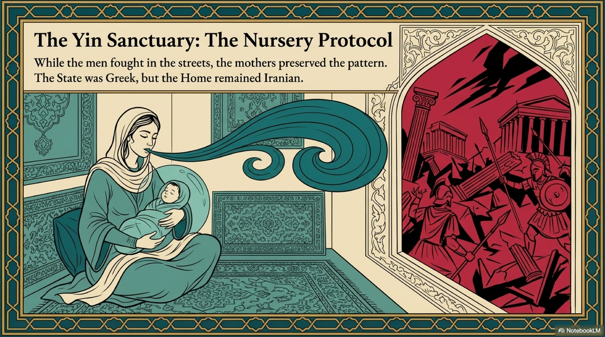

In 330 BC, the unthinkable happened. The fortress fell.
Alexander of Macedon, a twenty-something warlord fueled by the Iliad and Aristotelian logic, swept across the Hellespont. He dismantled the Achaemenid military machine with a new, higher-coherence tactical system—the Phalanx—and burned Persepolis to the ground.
In our structural analysis, this was a catastrophic collapse of The Roots (Level 1). The physical container of the civilization—the State, the King, the Law, the Treasury—was annihilated.
For almost any other ancient civilization, this would have been the end. When the Spanish burned Tenochtitlan, the Aztec mind died. When the Romans razed Carthage, Punic civilization vanished.
But Iran did not die. It went dormant.
What followed was a five-century interval known as the Hellenistic Interlude and the Parthian Empire. Historians often treat this era as a confusing gray zone. Through the lens of FRC, however, it reveals itself as a masterpiece of Systems Resilience. It was the era of the Bridge.

The Achaemenids had centralized coherence in the person of the Great King. This was efficient, but it created a single point of failure. Alexander hit that point, and the system crashed.
The Parthians, a semi-nomadic people from the northeast, rebuilt the system on a different architecture: Decentralization.
The Parthian Empire was not a monolith; it was a federation. It was a network of seven great noble families, each maintaining its own army and treasury. Thermodynamically, this is a shift from a rigid crystal to a Fluid Lattice.
When the Romans later invaded Parthia, they found it maddeningly difficult to conquer. They could take the capital, Ctesiphon, but the empire would not collapse. The coherence was distributed. If one node fell, the others simply reorganized.
The Parthians sacrificed the absolute power of the State for the resilience of the network. They accepted a higher baseline entropy (feudal squabbling) in exchange for survivability.

But while the feudal lords held the line, a deeper, quieter form of preservation was happening inside the home.
The Empire had fallen. The streets were ruled by Greeks. The public sphere was dangerous. So, the culture retreated into the private sphere. This is the first historical activation of the Yin Operating System.
While the men fought or negotiated in the courts, the mothers and grandmothers preserved the Pattern of the culture through the Folk Tale and the Lullaby.
This era crystallized the Nursery Protocol.
Consider the story of The Rolling Pumpkin (Kadu Ghelghelezan), a tale with roots in this era of vulnerability. An old woman meets a wolf, a leopard, and a lion. She is weak. She cannot fight like a warrior. So she uses wit. She delays them, she tricks them, and finally, she hides inside a pumpkin and rolls past them, singing a song of disorientation to confuse the enemy.
This was not just a bedtime story. It was a survival manual passed from mother to daughter. It taught the children of the conquest a vital lesson: When you cannot be the Lion, be the Pumpkin. When you cannot withstand the force, use the flow.
This protocol ensured that even as the external laws changed, the internal character of the people remained Persian. The State was Greek, but the Home was Iranian.

How do you preserve the Grand Narrative (Level 6) when the libraries are burned? You move the data from a fragile medium (paper/stone) to an antifragile medium (memory/song).
This era saw the rise of the Gosan—the minstrel-poet.
The Achaemenids wrote on stone cliffs. The Parthians wrote on the air. They codified the history, the myths, and the moral values of Iran into oral epics—songs set to music, governed by rhythm and rhyme.
In FRC terms, this is a shift to Level 2, The Rhythm.
Rhythm is a coherence technology. It locks information into a temporal pattern that is resistant to decay ("bit rot"). A story told in prose changes with every telling. A story locked in meter and rhyme persists for centuries with high fidelity.
The Gosans became the "backup servers" of the Iranian Mind. They carried the legends of the ancient kings and the ethical codes of Zoroastrianism through the vacuum of Greek domination.

The Parthian era was not a Golden Age of stone and administration. It was a Winter.
In winter, the tree looks dead. The leaves (the visible state) are gone. The sap (the energy) stops flowing. But the life of the tree has not vanished; it has concentrated itself into the root and the seed.
The Parthians were the husk that protected the seed.
They held the line against Rome for four hundred years. They kept the trade routes open. But most importantly, they kept the memory alive in the songs of the minstrels and the stories of the mothers. They ensured that when the winter ended, there would still be a Persian Mind left to bloom.
And the spring was coming.
In the province of Pars, the ancient heartland, a new dynasty was rising. They were not content with oral traditions and feudal drift. They wanted the stone back. They wanted the Fire to roar. They wanted to build a Cathedral of the Mind that would never, ever fall again.
They were the Sasanians. And they were about to engineer the most complex theological and political machine the world had ever seen.